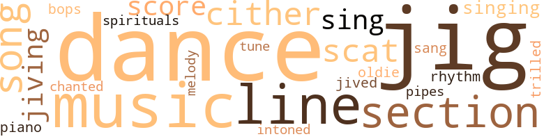
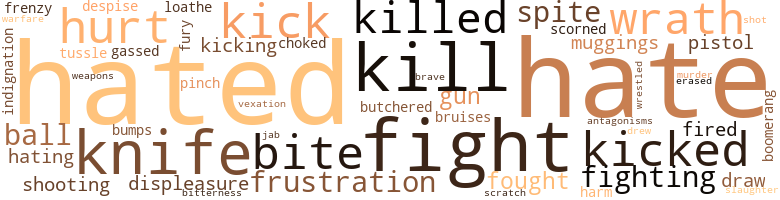
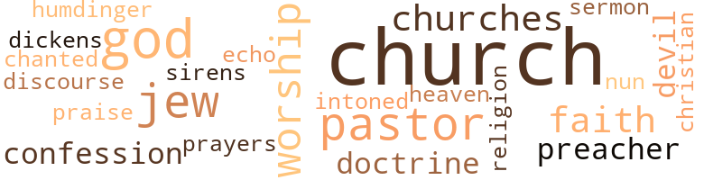

Spokes for the Wheel, by Broadus, Robert Deal (1961)
71 music-related terms matched in this text.
Most frequent terms in this topic: dance (9); music (8); line (6); section (5); jig (4)
bop.v.01
Definition: dance the bebop
| word | sentence |
|---|---|
| bops | One day a big white guy drills in the shop and bops upon the stand . |
dance.n.01
Definition: an artistic form of nonverbal communication
| word | sentence |
|---|---|
| dance | " I 'll not be able to wear this thing to the pre-election dance next week , " she was saying . |
| dance | He was to take me to the dance , but it 's to be a mixed affair and I fortunately realized in time that my meal-ticket deserves preference . |
| dance | AS I appeared downstairs for inspection by my sister Essie before leaving Retreat the night of the dance , she said she thought I looked nice , but was puzzled by the fact Zona had asked me to take her . |
| dance | " I had a wonderful time and I 'm so glad you took me , " Zona said , as we left the dance . |
| dances | " You may ignore politics , but make a point of never failing to register , for sooner or later issues are certain to arise you may wish to oppose or support , and your vote - if you had a vote - could well mean the difference , " I nevertheless continued to regard the long bitter sessions of mud-slinging and hopeful speculation marking the near approach of another of those every-two-year plum-hunts with threats , promises , accusations and denials of candidates flying back and forth too fast for sound appraisal anyway ; with bleating headlines and screaming editorials of rival newspapers trying to stir a dozing citizenry to demands that something be done in a hurry about alleged graft in high places , labor discord , racial strife , laxity of law enforcement agencies , trash-littered streets and uncollected garbage ; with Scrubbucket citizens , as usual , " talking " a great election , heated and humourous discussions raging in barber shops , poolrooms , eating places , and on practically every street corner ; with opposing forces staging dances , parties and huge inter-racial rallies in frenzied efforts to sway public opinion , importing political big-wigs of both sides and ambitious lesser lights , white and colored , for top roles in the shows . |
| dances | We 'll go to chitterling suppers , dances , shows , shindigs , poker parties - I 'm simply dying to play a few hands of tonk , I love tonk ! " |
| dance | Web , I 'm a passionate soul - and you might well have done as you pleased with me that night in the country after the dance . " |
| dance | I 've known it ever since you lugged her here after that dance and put her to bed . |
dance.v.03
Definition: skip, leap, or move up and down or sideways
| word | sentence |
|---|---|
| dance | " I had a wonderful time myself and you dance superbly , " I said . |
| dance | " Let 's eat , drink , and dance ? " |
| dance | I ai n't grinnin ' and my knees ai n't bondin ' like I 'm flxin ' to crawl or dance no jig . |
jig.n.01
Definition: music in three-four time for dancing a jig
| word | sentence |
|---|---|
| jigs | Seriously now , ai n't the Jews and jigs in the same boat ? " |
| jig | I see right off he 's from the South when he gives the coonish grin they all lay on a jig . |
| jigs | I must 've stole and sold ten thousand dollars worth of watered down stuff to big shot jigs to stock their playroom bars at home . |
| Jigs | Jigs can spot a jig too easily - or easily enough without help - and with both of us running around among them , they 'd add two and two and arrive at the word ' skunk ' in a hurry . |
| jig | Jigs can spot a jig too easily - or easily enough without help - and with both of us running around among them , they 'd add two and two and arrive at the word ' skunk ' in a hurry . |
| jig | Zona , of course , was no longer the " angel " and was " just another jig " following her marriage to me and subsequent racial unfrocking to dispell talk that I had " made the grade " ( married a white woman ) . |
| jigs | The place never had many jigs and I had to do all my playin ' with white kids of the folks where my mammy worked . |
| Jigs | Jigs crawlin ' around makin ' over the white folks . |
| jigs | When one died , the jigs 'd do all the grievin ' , moanin ' and singing ' a gang of sad songs . |
| jig | I ai n't grinnin ' and my knees ai n't bondin ' like I 'm flxin ' to crawl or dance no jig . |
jive.v.01
Definition: dance to jive music; dance the jive
| word | sentence |
|---|---|
| jived | So I 've been jived and led astray by vultures of different feather . |
| jiving | Now , if you 're another scheming , jiving rascal looking for a handout you 're fresh out of luck ! " |
| jiving | " I 'm not very good at jiving , " I said , " and I 'm not looking for a handout . |
music.n.01
Definition: an artistic form of auditory communication incorporating instrumental or vocal tones in a structured and continuous manner
| word | sentence |
|---|---|
| music | Weary of limb , soused with good bourbon , and full of food , we wound up sitting on the living room couch , voices lower yet than the soft music and attempting to make conversation when no conversation was needed . |
| music | Then there was only the music and I felt her moving toward me . |
| music | I fix him up in a hurry , wantin ' him out of there - give him the big rag music on the toes and broom him down . |
| music | We just turn on the music and honeymoon - " " Excuse me , please ! " |
| music | The heavy arm of Cass Evans across my shoulders . . . I knew the feel of that arm , the strength in it ; I 'd felt the weight of it , the warmth and the affection behind it , and would feel it many times during my life - but I had no eyes now for my brother-in-law , nor Essie , his wife , and my sister , whose quiet sobbing added undertones to the soft organ music . |
| music | Home - food , and liquor and music and laughter . |
| music | Soft , sweet music seemed to drift from above the church , down through the ceiling - to hover carressingly over the many bowed heads . |
| music | As the pastor 's arms descended , soulful organ music again filled the church . |
oldie.n.01
Definition: a song that was formerly popular
| word | sentence |
|---|---|
| oldie | " An oldie . |
piano.n.01
Definition: a keyboard instrument that is played by depressing keys that cause hammers to strike tuned strings and produce sounds
| word | sentence |
|---|---|
| piano | Essie 's playing would throw a songbird off key - and our piano was all the excuse needed for the company that made it to go out of business . |
pipe.n.04
Definition: a tubular wind instrument
| word | sentence |
|---|---|
| pipes | " ' Yeah ' , another 'll pipes . |
rhythm.n.04
Definition: the arrangement of spoken words alternating stressed and unstressed elements
| word | sentence |
|---|---|
| rhythm | Learning to walk properly , to glide rather than step - matching the rhythm in my natural stride . |
scat.n.01
Definition: singing jazz; the singer substitutes nonsense syllables for the words of the song and tries to sound like a musical instrument
| word | sentence |
|---|---|
| scats | Sleeping passengers , with shoes removed and feet propped up , sprawled in every conceivable position in the straight and narrow scats , and the air was heavy and odorous . |
| scat | " In a scat directly across die aisle from me a brown baby nursed contentedly on a long lean breast , while its mother patted her foot and softly hummed a spiritual . |
| scat | If successful , I passed whatever I could steal from her on to my gang or if someone else grabbed the scat or seats within copying distance of Carrie May , they would pass it around . |
score.n.02
Definition: a written form of a musical composition; parts for different instruments appear on separate staves on large pages
| word | sentence |
|---|---|
| score | " Maybe looks ai n't the main score . |
| score | The score was something-to-nothing against me , I thought , recalling other lumpy sessions I 'd had with Essie over Zona . |
section.n.01
Definition: a self-contained part of a larger composition (written or musical)
| word | sentence |
|---|---|
| section | The room extended out over the breezeway , in the only entirely new section of the house . |
| section | " A section of the basement , sir . " |
| section | " She came to Chicago from down South a green child of seventeen to live with me in a section of town long since scuttled and now occupied by a huge integrated housing development . |
| section | We took the section of driveway which continued upward around the hill and through a line of tall trees to the house . |
| section | This section of Crown Street was devoted solely to Negro business , with apartments over many of the stores . |
sing.v.02
Definition: produce tones with the voice
| word | sentence |
|---|---|
| sings | Taint like feedin ' a bird that never sings . " |
| sing | But you 'd have to cross the ocean on stilts , sing rattle-snakes to sleep or invent a lip muffler for public drinking fountains to spotlight yourself ! |
| sang | Inclusive freedom , as it should be ; not of the kind Jefferson , Clay and Franklin raved on - while slaves sang spirituals and parched corn in the moonlight - or the sort of freedom Patrick Henry would have or die ! |
singing.n.01
Definition: the act of singing vocal music
| word | sentence |
|---|---|
| singing | Service began with announcements , made in a man 's quieted voice , followed by the deep , emotional tones of a woman softly singing " Down By The Riverside . " |
| singing | When one died , the jigs 'd do all the grievin ' , moanin ' and singing ' a gang of sad songs . |
song.n.01
Definition: a short musical composition with words
| word | sentence |
|---|---|
| song | I 'd really missed that one , and Essie 's next remark was to make me wish I had n't : " I brought some song books home and you can practice tonight . |
| song | masterful ease and my trowel stroked a song in sweeping smoothness , which seemed to harmonize with the song in my heart . . . produce , produce , produce , and everything will be all right ! |
| song | masterful ease and my trowel stroked a song in sweeping smoothness , which seemed to harmonize with the song in my heart . . . produce , produce , produce , and everything will be all right ! |
| songs | When one died , the jigs 'd do all the grievin ' , moanin ' and singing ' a gang of sad songs . |
spiritual.n.01
Definition: a kind of religious song originated by Blacks in the southern United States
| word | sentence |
|---|---|
| spirituals | Inclusive freedom , as it should be ; not of the kind Jefferson , Clay and Franklin raved on - while slaves sang spirituals and parched corn in the moonlight - or the sort of freedom Patrick Henry would have or die ! |
tone.v.01
Definition: utter monotonously and repetitively and rhythmically
| word | sentence |
|---|---|
| intoned | Body silhouetted in the mellow candlelight , hands waving from up-lifted arms , the man 's voice intoned : " Let us support those of us who are up - that they remain up . |
| chanted | We had n't the slightest idea what we should do on noting those in the congregation turning to clasp the hand of another as many voices chanted " Lift Him Up " in unison . |
tune.n.01
Definition: a succession of notes forming a distinctive sequence
| word | sentence |
|---|---|
| line | I laughed with Evans and watched the scampering men ; then I inquired of Evans what his line was . |
| line | I know that line about successful people in this country having to gamble and that skeptics never grow rich , and I go along with it . |
| line | We took the section of driveway which continued upward around the hill and through a line of tall trees to the house . |
| line | On arrival at the hospital I noted that only a few men were working , with a mammoth crane dipping a shovel into the earth and loading it onto a long line of waiting trucks . |
| tune | His ideas were simply out of tune with the times . |
| line | I could not see myself , or any Negro , for that matter , benefiting overmuch from listening to some industrialist or business leader give off with the time-worn " You 're as good as me " line of hokum . |
| line | If we 'd bothered to check we would have learned that Dad , a widower , lived upstairs over the confectionary and sometimes slept in the place on a folding cot behind the counter , he carried a line of novelties in a showcase near the window we jimmied to gain entrance . |
| melody | When the services ended , organ melody became the only sound . |
warble.v.01
Definition: sing or play with trills, alternating with the half note above or below
| word | sentence |
|---|---|
| trilled | " At least forty thousand potatoes ! " she trilled . |
zither.n.01
Definition: a musical stringed instrument with strings stretched over a flat sounding board; it is laid flat and played with a plectrum and with fingers
| word | sentence |
|---|---|
| cither | Well , I 'd be hanged if I 'd stick around and do it cither . |
| cither | I wo n't be the last to do it cither . |
| cither | Letha Garret and Spike Manley had played so hard and carelessly they 'd had to marry , and were burdened with two children before cither of them was eighteen . |
122 violence-related terms matched in this text.
Most frequent terms in this topic: hated (12); hate (11); fight (7); kill (5); knife (5)
abhor.v.01
Definition: find repugnant
| word | sentence |
|---|---|
| loathe | I loathe you ! |
abrasion.n.01
Definition: an abraded area where the skin is torn or worn off
| word | sentence |
|---|---|
| scratch | A start from scratch could be disastrous . |
annoyance.n.02
Definition: anger produced by some annoying irritation
| word | sentence |
|---|---|
| vexation | She regarded me , a trace of vexation in her face . |
boomerang.n.01
Definition: a curved piece of wood; when properly thrown will return to thrower
| word | sentence |
|---|---|
| boomerang | " VVc should have made a boomerang of segregation , just as he claims , if for no other reason than it afforded a source for huge concentration of money - money with which we 've done practically nothing . |
bruise.n.01
Definition: an injury that doesn't break the skin but results in some discoloration
| word | sentence |
|---|---|
| bruises | " I only recall a car swooping down on me from either side , then awakened here with a broken left arm , fractured ankle , a busted rib , and numerous cuts , and bruises . " |
bump.n.01
Definition: a lump on the body caused by a blow
| word | sentence |
|---|---|
| bumps | It 's no secret that some of the little people we 've helped over the bumps in provision of payrolls - money for supplies - and that sort of thing , would like to cut loose from us . |
butcher.v.01
Definition: kill (animals) usually for food consumption
| word | sentence |
|---|---|
| butchered | Hitler gassed and butchered over six-million and the others never cried half as much about it as we do just for bein ' barred out of somethin' ! |
contemn.v.01
Definition: look down on with disdain
| word | sentence |
|---|---|
| scorned | But I do resent being hated without reason for being hated , which in effect smacks of contempt rather than hate anyway ; and I know of nothing more galling than to be held in contempt , pitied , yet overlooked , taken for granted and politely scorned . |
| despise | I despise you ! |
craze.n.02
Definition: state of violent mental agitation
| word | sentence |
|---|---|
| frenzy | The white folks ( police ) came , but when they did the frenzy of the woman 's wrath had cooled . |
displeasure.n.01
Definition: the feeling of being displeased or annoyed or dissatisfied with someone or something
| word | sentence |
|---|---|
| displeasure | All but her latest boy friend , that is , a handsome real estate agent named Clemont Devon , in whom I discerned marked displeasure at our working alone together in the office late at night . |
| displeasure | I got out of the car and frowned displeasure at prospect of facing her . |
draw.v.23
Definition: pull (a person) apart with four horses tied to his extremities, so as to execute him
| word | sentence |
|---|---|
| draw | We tried to draw water from a pump in the kitchen without success . |
| drew | I led her onto the platform , and while she was reading the lettering over the entrance a carload of people drew up nearby . |
| draw | " I guess so , " I said , watching a long yellow car draw up behind mine and stop . |
erase.v.01
Definition: remove from memory or existence
| word | sentence |
|---|---|
| erased | But the stamp of bigness by which be was marked would not be erased , and his influence was felt in every decision relating to the church 's rapid growth into the largest Negro place of worship in the city . |
fight.n.05
Definition: a boxing or wrestling match
| word | sentence |
|---|---|
| fight | All the fight 's out of this sucker ; but suckers are n't very good fish , are they ? " |
| fight | You 're in this fight for rights , and not solely the rights of deserving Negroes , but all Negroes , remember ? |
| fight | For forty years the Reflector had been regarded a symbol of freedom because of the endless fight it staged for equality and civil rights . |
| fight | " Think I wanted to lose the fight after winnin ' it ? " |
| fight | How could you lose the fight with the white guy already licked ? " |
fight.v.02
Definition: fight against or resist strongly
| word | sentence |
|---|---|
| fighting | We can finish fighting any time . " |
| fight | " I do n't want to fight any more . " |
| fought | I followed instructions and brought in attorney Bill Lunner , another of my old , old buddies , with whom I had fought , laughed and cried throughout my childhood days - to assist me in tightening up the business . |
| fighting | He took one look at Negro lawyers struggling with divorce cases and police court work - or fighting over the few nickels to be had from closing real estate deals - and forgot about hanging up his shingle . |
| fighting | still clinging to the last rung of the social and financial ladders , not even casting a shadow industrially , and as economically impotent as ennuchs in a harem . . . but fighting like mad to purchase a cup of coffee and a sandwich in a segregated restaurantl Oops - watch where you 're driving , boyl There were many taverns and restaurants , a large hotel , for-merely for white - several smaller hostelries - and a large theater , from which Negroes were barred in the days before swarming into the sector . |
| fought | Suddenly the YMCA loomed before me like an oasis in the desert and I began thinking of what I would say at the meeting ... I 'd start off by apprising them of the fact that Negroes are at best a little people , only a few years removed from bondage , and that the freedom they now enjoy , however limited , came by direct grant ; and I would remind them of their debt to clear-thinking , God-fearing whites who fought the early battles for them - with the underground railway , constitutional amendments and enactment of civil rights laws ; and that many whites are still giving them a big hand ! |
| fight | " Why 'd he fight us ? " |
| fought | They needed me - Web Coleman - who 'd fought and played in Scrubbuckct 's slimey streets and alleys and pulled many a tough-kid prank in company with Emmet Taft , Spike Manley , Bill Lunner , and Dimple Fegan . |
frustration.n.03
Definition: a feeling of annoyance at being hindered or criticized
| word | sentence |
|---|---|
| frustration | Achievement in reverse , or reversed achievement , I sometimes think of it , and the fact that I at last am doing something soothes the prickly heat of my frustration . |
| frustration | It is therefore highly important that said frustration be contained or I may one day go mad which would be a shame , really , for whatever wisdom I may pass on to others must of necessity be prospected for in the dense jungles of my mind , a perilous trek through the quagmire of ineptitude , indecision , confusion and complacency . |
| frustrations | That feeling was substantiated , and more - Dad 's aggrieved brain , tom asunder by fitful frustrations and obstinate illusions about his people , failed him under the strain . |
fury.n.01
Definition: a feeling of intense anger
| word | sentence |
|---|---|
| fury | The woman ran off screaming , with the man swinging and reaching for us in wildest fury . |
gag.v.06
Definition: cause to retch or choke
| word | sentence |
|---|---|
| choked | But as every lane was fairly choked with cars moving bumper-to-bumper , it would be some time yet before I would arrive at the YMCA . |
gas.v.01
Definition: attack with gas; subject to gas fumes
| word | sentence |
|---|---|
| gassed | Hitler gassed and butchered over six-million and the others never cried half as much about it as we do just for bein ' barred out of somethin' ! |
gun.n.01
Definition: a weapon that discharges a missile at high velocity (especially from a metal tube or barrel)
| word | sentence |
|---|---|
| gun | " We wrestled and the gun went off ! " |
| gun | The gun went off . |
| gun | I did n't need no gun . |
hassle.n.02
Definition: disorderly fighting
| word | sentence |
|---|---|
| tussle | " I 've the experience to give 'em a tussle , and can get the work , " he said . |
hate.n.01
Definition: the emotion of intense dislike; a feeling of dislike so strong that it demands action
| word | sentence |
|---|---|
| hate | Education will do away with hate , we are told , and will , of course , rid the world of fools . |
hate.v.01
Definition: dislike intensely; feel antipathy or aversion towards
| word | sentence |
|---|---|
| hated | I would n't wish what we have to put up with on a woman I hated , let alone one I loved ! " |
| hate | I hate to lose . |
| hate | How you must hate me ! " |
| hating | " Sure , " I said , bending to kiss her and hating the ordeal of leaving . |
| hated | I thought you hated me ? " |
| hating | But hating you - I 'm afraid that would be a harder job than I 'd care for . |
| hated | She paused at the door , faced me , and then delivered her heaviest bomb : " A confession , Web : For a time I actually hated Zona ! " |
| hate | She 'd become ill-tempered and downright nasty and I 'd come to hate her , or hated her white skin and active brain , rather , which placed her above me like some monster with a rawhide whip in its hand . |
| hated | She 'd become ill-tempered and downright nasty and I 'd come to hate her , or hated her white skin and active brain , rather , which placed her above me like some monster with a rawhide whip in its hand . |
| hated | " Another thing , they 'll have to ditch the idea they are hated in America . |
| hated | There has been at least four wars in which Negro soldiers might easily have been shoved up front and sacrificed , which certainly would have been the case had they been hated . |
| hated | " Take the Southerners now , if they hated the black man and lie was the rapist and plunderer they 'd have their children believe , why would they go off to war - the Civil War , at that - and leave him behind with their women folk ? |
| hated | " No , Web , the Negro is n't really hated in America . |
| hated | " Well , I do n't resent being hated , if indeed I am by whites , " I said slowly . |
| hated | But I do resent being hated without reason for being hated , which in effect smacks of contempt rather than hate anyway ; and I know of nothing more galling than to be held in contempt , pitied , yet overlooked , taken for granted and politely scorned . |
| hated | But I do resent being hated without reason for being hated , which in effect smacks of contempt rather than hate anyway ; and I know of nothing more galling than to be held in contempt , pitied , yet overlooked , taken for granted and politely scorned . |
| hate | But I do resent being hated without reason for being hated , which in effect smacks of contempt rather than hate anyway ; and I know of nothing more galling than to be held in contempt , pitied , yet overlooked , taken for granted and politely scorned . |
| hate | The note I found there was brief : " I hate you ! |
| hate | I hate to disappoint you ; I hate to miss that trip , and I should be working anyway , for pay , low as my money is ; but if I were fixed for this , it would n't be a sacrifice and therefore would n't serve the same purpose . " |
| hate | I hate to disappoint you ; I hate to miss that trip , and I should be working anyway , for pay , low as my money is ; but if I were fixed for this , it would n't be a sacrifice and therefore would n't serve the same purpose . " |
| hate | " Well , I 'd hate to think it could be worse . |
| hated | Memories of insecurity in the past and feelings motivated by fear of unemployment , and of a stinted , hated life in a ghetto , of another depression - had made me wish for just such a place , where I might raise my own food and keep a cow , some chickens and a couple of pigs . |
| hate | But I ca n't hate them to save my soul - not even the ones I know hate me - and I do n't really want too much happenin ' to them that ai n't good , either . |
| hate | But I ca n't hate them to save my soul - not even the ones I know hate me - and I do n't really want too much happenin ' to them that ai n't good , either . |
hostility.n.02
Definition: a state of deep-seated ill-will
| word | sentence |
|---|---|
| antagonisms | If Negroes were to start at once teaching their children the value of placing good manners , decent breeding , personal thriftiness , and an independent living , above all else in life . . . If they were to begin seeking respect through accomplishment , stability of character , shrewdness , subtlety - avoiding conflict by deviously turning antagonisms into lasting good will ... If Negroes were to suddenly become a quiet , hard-working lot , pooling and investing resources towards an essential , construe - tive , and vital part of community life ; I felt as Mr. Hickey did - thcre 'd be little left of the Negro problem ! |
indignation.n.01
Definition: a feeling of righteous anger
| word | sentence |
|---|---|
| indignation | The man 's surprise and indignation prompted the most violent burst of swearing any of us ever had heard ; and if whoever swiped his pants would just step out of the darkness he 'd break every hone in their body . |
injury.n.01
Definition: any physical damage to the body caused by violence or accident or fracture etc.
| word | sentence |
|---|---|
| harm | " There was , to my way of thinking , a definite , logical purpose to our little game at the start , a means to an end involving no harm or discomfort to anyone , and it went off nicely ; but I 'd no idea the means to an end would become unending , or that if it were ever to end it would come about only with the end of Zona 's masquerade . |
| hurt | That hurt , fellers - it hurt like belli But it helped , tool It showed me that a man 's life was worth no more 'n he 'd chance to live , knowin ' he 'd lose it some day anyhow . |
jab.n.02
Definition: a quick short straight punch
| word | sentence |
|---|---|
| jab | " You 've a good left jab and a powerhouse right - when it lands , " he told me . |
kick_back.v.02
Definition: spring back, as from a forceful thrust
| word | sentence |
|---|---|
| kicked | Cass Evans kicked away a tin can and settled on his haunches , breaking tire warm shaft of sunshine streaking through the fence . |
| kicked | But Zona had slumped down on the office couch and kicked off a shoe . |
| kicking | " I 've no idea , " Zona said , kicking off her other shoe . |
| kick | I bet you kick up a mean rug ! |
| kicking | How utterly ridiculousl " The baby across the aisle was kicking and roughing it up by this time . |
| kick | He 'd feel some need fer us then - and you do n't kick nothin ' ' round you need . |
| kicked | She kicked off her shoes and stepped onto the living room couch , then threw her arms around my neck and rode me piggyback to the stairway where she said , " Whoa , mule ! |
| kick | But I ai n't the same joker no more , for I know that 's the last time anybody 'll kick my rump - and live ! " |
kill.v.10
Definition: cause the death of, without intention
| word | sentence |
|---|---|
| killed | I was stalemated by the coming elections , as they 'd killed my drive to impress and win the affection of a lovely lady suspended pendulum-wise between two worlds . |
| kill | There 's absolutely no cause for you to kill yourself , though . |
| Kill | Kill the light and get in here ! " |
| killed | She came straight to me at the kitchen table , and half turning to Essie , said : " I could have killed you - taking me to bed and falling asleep ! " |
| killed | When I did look I found it contained a picture of a woman clutching a butcher knife and kneeling in sorrowful anguish over a man whom she 'd killed . |
| kill | " I 'm aimin ' to kill somebody er make somebody kill me . |
| kill | " I 'm aimin ' to kill somebody er make somebody kill me . |
| kill | Do n't nobody care a damn , one way or another ' n. " Them fellers jest speak to me , ' Hi , darky , ' or ' howdy , nigger , ' which same ai n't none polite - but you 'd have to kill everybody in the South to stop that - and go on chin-chattin ' same as they 'd never seen me . |
| kill | You kin be as good as him , er as bad as him ; you kin be as big as him , or as tough as him - but if he 's any kind of man hisself , he 'll make you kill him before he 'll let you out-man him . |
knife.n.02
Definition: a weapon with a handle and blade with a sharp point
| word | sentence |
|---|---|
| knife | Cool Mama , dark with short hair standing on end , brandished a butcher knife at those who would stop her , before plunging the knife into Willie , stabbing him again and again , until he pitched forward in the street - dead . |
| knife | Cool Mama , dark with short hair standing on end , brandished a butcher knife at those who would stop her , before plunging the knife into Willie , stabbing him again and again , until he pitched forward in the street - dead . |
| knife | The murderess stood over the lifeless form and raised her hands aloft , still holding the bloody butcher knife . |
| knife | When I did look I found it contained a picture of a woman clutching a butcher knife and kneeling in sorrowful anguish over a man whom she 'd killed . |
| knife | All of a sudden I was sorry about the whole thing , and the sharp knife of self-disdain cut even deeper when she said , " You still do n't believe me ! |
malice.n.01
Definition: feeling a need to see others suffer
| word | sentence |
|---|---|
| spite | She was rather thin , but nothing like as frail as she had seemed before ; and she had looks all right , in spite of her mildly hard brown eyes and the half-sneering set of lips that framed a wide generous mouth ; she owned a nicely-rounded pair of legs too , and the kind of breasts that needed no describing ! |
| spite | This , in spite of the fact the majority of great men and leaders throughout history have been highly educated . |
| spite | Even the South is coming around , or will , though this may not be soon in spite of those narrow people , both white and colored , who persist in believing deep-rooted prejudicies , differences , background , traditions , living standards and the myriad of distinctions between races , which have matured through the slow centuries , can be brushed aside over night or , better still , by executive order , such as the freedom Lincoln granted the slaves - leaving them at the mercy of former masters , where they 'd be forced to bear the brunt of a defeated wrath ; and small wonder the Southerners poured it into them . |
mugging.n.01
Definition: assault with intent to rob
| word | sentence |
|---|---|
| muggings | Shinbone rated the unsavory distinction of being the toughest street in town due to frequent cutting and shooting scrapes ; muggings , prostitution and gambling , and the fact that no single foot patrolman was ever assigned to probe its dangerous shadows after nightfall . |
| muggings | Mark enjoyed recounting his escapades to me , telling of cars the gang looted , of muggings , shake-downs and collections of tribute from rival gangs , burglaries and dope running . |
murder.n.01
Definition: unlawful premeditated killing of a human being by a human being
| word | sentence |
|---|---|
| murder | A pity the same can not be said of Emmet Taft , who died in the electric chair for murder during a stickup , and of my brother Mark who received a life sentence for his part in the same crime . |
musket_ball.n.01
Definition: a solid projectile that is shot by a musket
| word | sentence |
|---|---|
| ball | Another time she said , " When I get out of here , we 'll have a ball , Web . |
| ball | A ball , do you hear ? |
| ball | " Any kids of ours would need plenty on the ball . " |
open_fire.v.01
Definition: start firing a weapon
| word | sentence |
|---|---|
| fired | " Good old sis is right , " she fired at me , " but I 'm not through with you - and wo n't be until this Zona Anders mess is cleared up . " |
| fired | P.S. You 're also fired ! " |
pain.v.02
Definition: cause emotional anguish or make miserable
| word | sentence |
|---|---|
| hurt | " Work never hurt me any . " |
| hurt | He was avoided and encountered a stiffness and coldness in the reading room at the Y that must have hurt him deeply . |
pinch.n.02
Definition: an injury resulting from getting some body part squeezed
| word | sentence |
|---|---|
| pinch | " The housing pinch was terrific and the best we could manage was a rental unit in a new development , on which contractors still were working and none of the landscaping or paving was done . |
pistol.n.01
Definition: a firearm that is held and fired with one hand
| word | sentence |
|---|---|
| pistols | So I hang onto that money - seven dollars it was - and worked four whole months to git forty more to send off fer one of them mail order pistols . |
| pistol | I 'm us - men my pistol - and bigger 'n the whole damn place ! |
resentment.n.01
Definition: a feeling of deep and bitter anger and ill-will
| word | sentence |
|---|---|
| bitterness | There were tears in his hard eyes as he dragged the tiny cylinder across the tip of his tongue - not tears of the weeping variety , but a seeping overflow from a well of bitterness deep in the big man 's soul . |
shoot.v.02
Definition: kill by firing a missile
| word | sentence |
|---|---|
| shot | The old man resisted and was shot to death . |
shooting.n.02
Definition: killing someone by gunfire
| word | sentence |
|---|---|
| shooting | Shinbone rated the unsavory distinction of being the toughest street in town due to frequent cutting and shooting scrapes ; muggings , prostitution and gambling , and the fact that no single foot patrolman was ever assigned to probe its dangerous shadows after nightfall . |
| shooting | She was an advanced ( A ) student and I , for one , had coasted through three grades by copying her stuff , making a point of shooting for the seat directly behind or to either side of the aisle across from her . |
slaughter.n.03
Definition: the savage and excessive killing of many people
| word | sentence |
|---|---|
| slaughter | My brother Mark , two years younger than I , made the rounds of the downtown market area for meated bones and withered fruits and vegetables , or haunted Mooney 's slaughter house for calfs heads , windpipes and other give-aways . |
sting.n.03
Definition: a painful wound caused by the thrust of an insect's stinger into skin
| word | sentence |
|---|---|
| bite | Spike Manley 's voice wondered if I 'd care for a slug or two and a bite at his Sportsman 's Bar ? |
| bite | " But I was hungry , very hungry , for it had been some time since I had eaten anything , then only a bite and I 'd neglected to pack a lunch . |
| bite | I knew the milkhouse larder was well-stocked too , but if there had n't been a bite to eat in the house , I had only to go to the back door and look outside . |
war.n.03
Definition: an active struggle between competing entities
| word | sentence |
|---|---|
| warfare | Handsome , devil-may-care Emmet Taft had n't caught on , nor had my brother Mark ; both were top dogs in a gang of young hoods who called themselves the " Charles Street Wolves , " and well on the way to carving out a reputation for street warfare and petty thievery . |
weapon.n.01
Definition: any instrument or instrumentality used in fighting or hunting
| word | sentence |
|---|---|
| weapons | Her husband said , " Name the weapons , sir . |
weather.v.01
Definition: face and withstand with courage
| word | sentence |
|---|---|
| brave | The small candles flared slightly brighter - with a seemingly last brave effort to defy lack of sustaining wax - then flickered feebly , gaspingly , and went out . |
wrath.n.01
Definition: intense anger (usually on an epic scale)
| word | sentence |
|---|---|
| wrath | The white folks ( police ) came , but when they did the frenzy of the woman 's wrath had cooled . |
| wrath | " All right , Essie - Zona Anders is n't white , " I said , feeling that stifling her doubts and putting an end to her griping was worth facing her wrath at not being told sooner . |
| wrath | Even the South is coming around , or will , though this may not be soon in spite of those narrow people , both white and colored , who persist in believing deep-rooted prejudicies , differences , background , traditions , living standards and the myriad of distinctions between races , which have matured through the slow centuries , can be brushed aside over night or , better still , by executive order , such as the freedom Lincoln granted the slaves - leaving them at the mercy of former masters , where they 'd be forced to bear the brunt of a defeated wrath ; and small wonder the Southerners poured it into them . |
wrestle.v.01
Definition: combat to overcome an opposing tendency or force
| word | sentence |
|---|---|
| wrestled | " We wrestled and the gun went off ! " |
68 religion-related terms matched in this text.
Most frequent terms in this topic: church (13); Church (6); God (5); pastor (5); worship (4)
christian.n.01
Definition: a religious person who believes Jesus is the Christ and who is a member of a Christian denomination
| word | sentence |
|---|---|
| Christian | Society obviously is made up of crooks and fools these days ; and one is permitted to pretend to be honest , law-abiding and a Christian only for as long as it takes somebody to get around to proving how big a rascal he really is . |
church.n.02
Definition: a place for public (especially Christian) worship
| word | sentence |
|---|---|
| church | " We wo n't bother with a church wedding , " I was saying , matter-of-factly . |
| church | Oh , yes , the group captain of your Little Brothers unit called to remind you of the meeting tonight at the church . " |
| church | The Limners were always good for a feed , but they had gone to a new church nearby , a neighbor lady told us . |
| church | So , in pursuit of Sunday dinner we went to church - and for the very first time in our lives . |
| church | The tiny church was packed and the heat was terrific . |
| church | Soft , sweet music seemed to drift from above the church , down through the ceiling - to hover carressingly over the many bowed heads . |
| church | As the pastor 's arms descended , soulful organ music again filled the church . |
| church | " For the benefit of visitors with us today - this is a free church . |
| church | A good name for a church , I believe , since brotherhood - man 's love of man - seems to have fled the earth . |
| churches | Reverend Jeffery Grant was a progressive from Moorehouse college who failed at several churches because he believed the way a man lives will direct his role in the hereafter and that people should be taught to live with and to love one another in this world with less preparation for death . |
| church | Despairing of waiting for another assignment , he went about building his own little church , over which he presided until finally prompted to seek a charter in the federation of churches by demands of progress and " the speed of things , " as he put it . |
church.n.04
Definition: the body of people who attend or belong to a particular local church
| word | sentence |
|---|---|
| Church | There 's a preacher too - Jeffery Grant - at The Church Of The Brotherhood - carries a lot of weight , but he 's so tough - I mean the stuff you got ta live up to - you 're about as well off duckin ' him if you 're lookin ' for a hand . |
| church | But it 's men 's day at church ; you 're down to do a solo - and choir practice was last night ! " |
| Church | At the Church Of The Brotherhood : The Reverend Jeffery Grant officiating . |
| church | Or at church ? |
| Church | Essie and Cass Evans were married by the Reverend Jeffery Grant in a quiet ceremony attended by a few friends at the Church Of The Brotherhood . |
| Church | Therefore , all are welcome to the Church Of The Brotherhood . |
| Church | Church Of The Brotherhood . |
| churches | Despairing of waiting for another assignment , he went about building his own little church , over which he presided until finally prompted to seek a charter in the federation of churches by demands of progress and " the speed of things , " as he put it . |
| churches | I shall never forget a statement he made prior to his farewell sermon : " For a race on the move , as we are , we can ill afford so many unsanctioned churches , nor can we permit ourselves to he further victimized by unscrupulous would-be ministers , who make a mockery of the right to worship privilege by setting themselves up as gods and fleecing the innocent and ignorant of every nickel in sight . |
| Church | " Fortunately , there has been no fleecing at The Church Of The Brotherhood ; but although the doctrine is clearly and firmly established here and I have done what I could with an idea , the time for organization and enlargement of that idea by younger minds is at band ... " A young pastor was brought in and Reverend Grant was pensioned . |
| church | But the stamp of bigness by which be was marked would not be erased , and his influence was felt in every decision relating to the church 's rapid growth into the largest Negro place of worship in the city . |
confession.n.05
Definition: the document that spells out the belief system of a given church (especially the Reformation churches of the 16th century)
| word | sentence |
|---|---|
| confession | She paused at the door , faced me , and then delivered her heaviest bomb : " A confession , Web : For a time I actually hated Zona ! " |
| confession | She closed the door . . . I left with strong misgivings about Evans , and surprised at my sister 's confession and subsequent behavior . |
curate.n.01
Definition: a person authorized to conduct religious worship
| word | sentence |
|---|---|
| pastor | As the pastor 's arms descended , soulful organ music again filled the church . |
| pastor | We held hands until the pastor again spoke to the gathering . |
| pastor | Rising in a body , the group waited until the pastor completed his trek down the aisle and threw the doors wide , letting sunlight stream piercingly into the darkened interior . |
| pastor | Let it embrace you ! " the pastor said . |
| pastor | " Fortunately , there has been no fleecing at The Church Of The Brotherhood ; but although the doctrine is clearly and firmly established here and I have done what I could with an idea , the time for organization and enlargement of that idea by younger minds is at band ... " A young pastor was brought in and Reverend Grant was pensioned . |
devil.n.03
Definition: a word used in exclamations of confusion
| word | sentence |
|---|---|
| dickens | Like the dickens it was . |
doctrine.n.01
Definition: a belief (or system of beliefs) accepted as authoritative by some group or school
| word | sentence |
|---|---|
| doctrine | There is no need for money-changers - no board of directors , trustees or deacons to take exception to whatever doctrine I may choose to expound . |
| doctrine | " Fortunately , there has been no fleecing at The Church Of The Brotherhood ; but although the doctrine is clearly and firmly established here and I have done what I could with an idea , the time for organization and enlargement of that idea by younger minds is at band ... " A young pastor was brought in and Reverend Grant was pensioned . |
echo.n.02
Definition: (Greek mythology) a nymph who was spurned by Narcissus and pined away until only her voice remained
| word | sentence |
|---|---|
| Echo | I drove to Echo Lake Park and spent several hours making out that report - in long hand on plain notebook paper - placed it in a folder under the heading , " L. Coy - Cleaning , " and tucked it into my brief case . |
eden.n.01
Definition: any place of complete bliss and delight and peace
| word | sentence |
|---|---|
| heaven | " Sounds good , " I said , shaking my head and smiling , though heaven knows why I was smiling considering the pain she was causing me and what I would have to say to her . |
god.n.03
Definition: a man of such superior qualities that he seems like a deity to other people
| word | sentence |
|---|---|
| God | Them thet 's cryin ' think the wheel 's gone ; them thet 's singin ' thinks God 'll mebbe slow it down . . . and them thet 's jes ' playin ' along in the muddy road ai n't thinkin ' much ' bout nothin ' I " Funny thing though , the wheel never quit rollin ' . |
| God | This social war they 're staging is silly and the most needless thing ever , inasmuch as we all shall appear as equals before God . " |
| God | " In God 's image and of woman ? |
| God | Its erection came through efforts of my own labor - and the will of God . |
| God | " God 's light . |
| gods | I shall never forget a statement he made prior to his farewell sermon : " For a race on the move , as we are , we can ill afford so many unsanctioned churches , nor can we permit ourselves to he further victimized by unscrupulous would-be ministers , who make a mockery of the right to worship privilege by setting themselves up as gods and fleecing the innocent and ignorant of every nickel in sight . |
| god | By god , I 'd show them poor crackers somethin' ! |
humdinger.n.01
Definition: someone of remarkable excellence
| word | sentence |
|---|---|
| humdinger | " Looks like a humdinger to me . |
jew.n.01
Definition: a person belonging to the worldwide group claiming descent from Jacob (or converted to it) and connected by cultural or religious ties
| word | sentence |
|---|---|
| Jews | Seriously now , ai n't the Jews and jigs in the same boat ? " |
| Jew | " Naw , and even if that was so , the Jew 'd be skipper of the boat ! " |
| Jew | " We holler about prejudice and discrimination and segregation , but when did anything like that ever stop a Jew ? |
| Jew | Bar a Jew out of a joint and the next tiling you know he 'll own it . |
| Jews | You do n't see no Greeks and Italians and Jews clownin ' ' round takin ' a lot of scufF . |
nun.n.01
Definition: a woman religious
| word | sentence |
|---|---|
| nun | " Cleaner 'n the heart of a nun ! " |
praise.n.02
Definition: offering words of homage as an act of worship
| word | sentence |
|---|---|
| praise | Zona thought well of the report , and a note I 'd attached to the folder by clip suggesting a partnership with Leland Coy rather than extending him a loan , drew her special praise . |
prayer.n.01
Definition: the act of communicating with a deity (especially as a petition or in adoration or contrition or thanksgiving)
| word | sentence |
|---|---|
| prayers | No , I sha n't laugh , only wonder , wonder whether or not those same doors might not have opened sooner had Negroes made a point of avoiding conflict , however needling to pride , while exercising diligent effort not to offend by displaying polite graciousness and cleanliness at all times ; instituting an all-out effort to make themselves liked - all in conjunction with a quiet , yet unrelenting drive sparked by a " We 'll show 'em " attitude ; and I also wonder what those poor hopeful trusting slaves , who joyfully shouted , " Our prayers have been answered ! " when Grant took Richmond , would think if they could look in on us today . |
preacher.n.01
Definition: someone whose occupation is preaching the gospel
| word | sentence |
|---|---|
| preacher | There 's a preacher too - Jeffery Grant - at The Church Of The Brotherhood - carries a lot of weight , but he 's so tough - I mean the stuff you got ta live up to - you 're about as well off duckin ' him if you 're lookin ' for a hand . |
| preacher | " A feller 's likely to git a trifle nervous tcllin ' all them lies to the preacher . " |
religion.n.01
Definition: a strong belief in a supernatural power or powers that control human destiny
| word | sentence |
|---|---|
| faith | It was hard to entertain much faith in people living in Shinbone Street , harder yet to conceive of anything good coming of such a place , despite the fact much good had . |
| faith | Some did listen - out of respect for an old man with a dream , I rather suspect - while most of the little fellows were extremely shy due to lagging faith in Negro leadership . |
| faith | A world of words ; words of hope and of hopelessness ; of belief and of disbelief ; of faith and of faithlessness . |
religion.n.02
Definition: an institution to express belief in a divine power
| word | sentence |
|---|---|
| Religion | Religion and intermarriage . |
satan.n.01
Definition: (Judeo-Christian and Islamic religions) chief spirit of evil and adversary of God; tempter of mankind; master of Hell
| word | sentence |
|---|---|
| devil | " VVhen 'n the devil will he finish whatever he 's doing ? " |
| devil | " Stop lying , Cass Evans ; I 'm ugly as the devil , and you know it ! " |
sermon.n.01
Definition: an address of a religious nature (usually delivered during a church service)
| word | sentence |
|---|---|
| discourse | " In your discourse that time about the difficulties of passing for white , you overlooked one thing , Web : that although classed a Negro , one can not have a white skin , different blood , and logically be expected to think and act typically Negroid . |
sermon.n.02
Definition: a moralistic rebuke
| word | sentence |
|---|---|
| sermon | I shall never forget a statement he made prior to his farewell sermon : " For a race on the move , as we are , we can ill afford so many unsanctioned churches , nor can we permit ourselves to he further victimized by unscrupulous would-be ministers , who make a mockery of the right to worship privilege by setting themselves up as gods and fleecing the innocent and ignorant of every nickel in sight . |
siren.n.01
Definition: a sea nymph (part woman and part bird) supposed to lure sailors to destruction on the rocks where the nymphs lived
| word | sentence |
|---|---|
| sirens | We swung off , sirens screaming . |
tone.v.01
Definition: utter monotonously and repetitively and rhythmically
| word | sentence |
|---|---|
| intoned | Body silhouetted in the mellow candlelight , hands waving from up-lifted arms , the man 's voice intoned : " Let us support those of us who are up - that they remain up . |
| chanted | We had n't the slightest idea what we should do on noting those in the congregation turning to clasp the hand of another as many voices chanted " Lift Him Up " in unison . |
worship.n.01
Definition: the activity of worshipping
| word | sentence |
|---|---|
| worship | " I particularly like what he had to say about jobs : that although the whites are making more and higher-paying jobs available to colored , jobs alone wo n't pull us out , that we 'd better learn something of financial investments and collective benefits to be derived from corporations - to realize that of the rights we 're breaking our necks for , other than jobs - not one will add a dime to our pockets I " I wholeheartedly agree with his oft-repeated assertion that the most essential of all rights have long been ours - the right to congregate , the right to worship , and the right to incorporate investment capital - and that if more use were made of those existing rights we possibly would have achieved respectful parity with other Americans by now . |
| worship | The policy here involves peaceful worship and search for understanding . |
| worship | I shall never forget a statement he made prior to his farewell sermon : " For a race on the move , as we are , we can ill afford so many unsanctioned churches , nor can we permit ourselves to he further victimized by unscrupulous would-be ministers , who make a mockery of the right to worship privilege by setting themselves up as gods and fleecing the innocent and ignorant of every nickel in sight . |
| worship | But the stamp of bigness by which be was marked would not be erased , and his influence was felt in every decision relating to the church 's rapid growth into the largest Negro place of worship in the city . |